「02」面向对象¶
类¶
类的基本格式¶
定义类-创建对象-使用对象
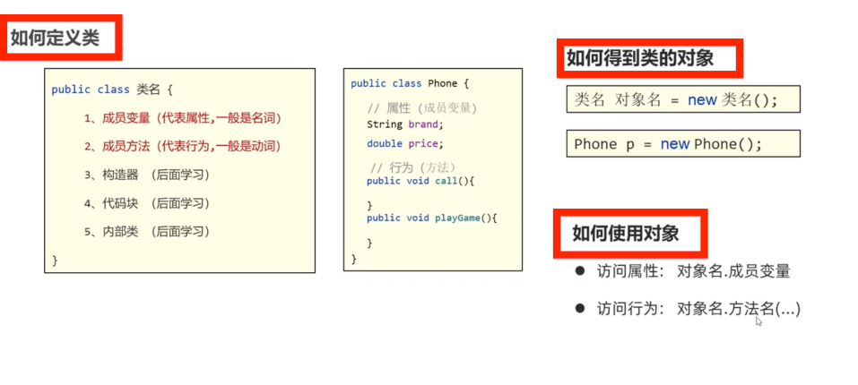
类的补充知识¶
- 类的分类：
javabean类：这个不写main
测试类：写main
- 类名的格式
首字母大写，且见名知义
-
一个代码文件可以定义多个类，但是只能由一类是public修饰的，public修饰的名字必须是java代码的文件名称
-
以后自己新建的类，可以作为一个新的数据类型来使用
比如新建了一个朋友类Friend
可以用它来
定义一个朋友类数组Friend arr=new Friend(3)；
定义一个朋友类的变量Frined A；
基本语法¶
封装¶
定义：
对象代表什么，就封装对应的数据，和行为。
Private和public¶
private修饰的成员只能在本类中访问
set和get方法¶
- Set：给成员变量赋值
- Get：对外提供成员的变量
this关键字¶
成员变量和局部变量
它们满足的是就近原则
解决方法：this关键字
就可以区分成员变量和局部变量
构造方法¶
定义：创建对象的时候，给成员变量赋值初始化用的
注意它们的特点
- 推荐书写：都写空参构造与带全部参数构造的方法
标准的JavaBean¶
代表标准
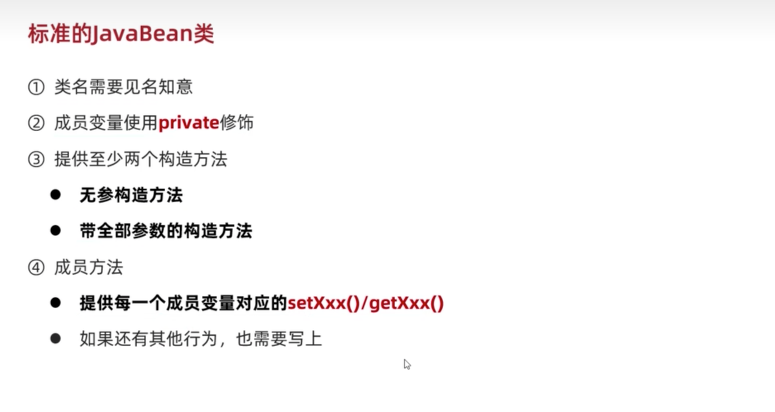
快捷键生成方法¶
cmd+N生成构造方法
win是alt+insert
或者alt+Fn+insert
cmd+opt+m抽取方法格式化代码cmd+opt+L创建对象提示参数cmd+pcmd+opt+v自动补全左侧声明变量代码win中是ctr+alt+v- 快速调出系统的报错解决方法
opt+回车
PTG插件¶
ptg快速生成javaBean
使用方法：右键空白处选择javabean字样的
JAVA内存分配原理¶
- 方法区
.class文件
- 栈内存
放main方法
放对象的方法
一个new对象，其实在栈内存中是一个地址值
- 堆内存
new、地址
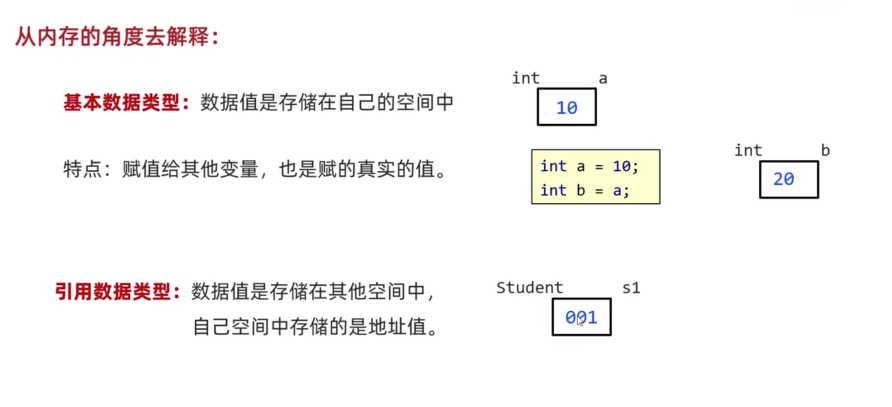
键盘录入¶
体系1¶
next()接受字符串
遇到空格-制表符-回车就停止接收
体系2¶
可以接受空格-制表符，但是遇到回车才停止接受数据
（俩个体系不能混用）
数组¶
- 数组里面如果有一个空间是空的话，里面装的是null；
Array类¶
好用的静态方法：
- 1.
.toString数组输出字符串
例如：int []arr={1,2,3,4,5,7}
Array.toString(arr)
输出[1,2,3,4,5,7]
带中括号和逗号的输出
- 2.
.sort
按照升序排序数组
返回的是数组
- \3. 数组的比较
- 4.查找数组中的元素的下标
字符串¶
字符串是引用数据类型，里面是一个地址值
API¶
JDK中提供的各种功能的java类
就是别人已经写好的，只要学习如何使用就可以了
- API帮助文档的使用
String类¶
在java.lang包里
equals方法¶
- 方法
equals判断字符串是不是相等 equlasignoreCase（忽略大小写）
返回的是一个boolean
例子：
遍历字符串¶
- 方法一：
.charat(索引)根据索引，求字符串中的字符 - 方法二：
.length()求字符串的长度
Tips：区别与求数组长度,数组是.length
区别在于有没有（）
- 快捷键
Str.length().fori快速生成for循环，次数是字符串内字符的个数
StringBulider类¶
- 含义：是一个可以包容所有类型的容器
这个容器不是String类！不是字符串
- 成员方法：
1.添加类型append（任意类型）
2.反转内容reverse（）
3.返回长度length（）
4.转换成字符串 toString（）
- 使用场景：
1.字符串的拼接
2.字符串的反转
StringJoiner类¶
-
含义：也是个容器
-
构造方法
1.StringJoiner（间隔符号，开始符号，结束符号）
\2. StringJoiner（间隔符号）
- 成员方法
1.add（添加内容）
2.length（）
3.toString（）
- 应用场景：高效拼接字符串
如果有变量参与的字符串拼接，会在内存中，浪费很多内存
例如：String X = X+"1231231"
如何解决：
用StringBuilder或者Stringjoiner
如何改变字符串的内容¶
- 1.用
subString方法来截取，再来拼接
- 2.把字符串变成字符数组
方法.toCharArray();
调整字符数组里面的数据，最后把字符数组变成字符串
集合ArrayList¶
- 特点
1.可以自动扩容
2.存储类型只能是引用数据类型
- 格式：
成员方法：增删改查¶
1.添加add
2.删除remove
可以根据索引删除，或者根据内容删除
3.修改
返回的是被覆盖的原元素
4.查询
get（索引）查询
size（）获得长度
包装类¶
-
问题引入：如果想要在集合中存数字怎么办？
-
解决：使用
包装类
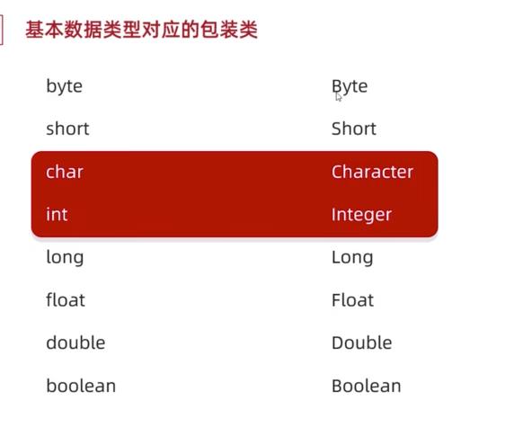
static静态¶
静态变量¶
- 含义：就是所有该类创建的对象，共享这个变量。
- 例如：多个学生共享一个老师
- 调用方法：
1.用类名调用（推荐）
2.用对象名调用
静态方法¶
应用场景：多用来测试类和工具类中。
- 工具类
1.要私有化构造方法private
目的：不让外界创建它的对象
2.静态方法构建
注意事项¶
1.静态方法内不能访问非静态的方法
2.静态方法内没有this关键字
3.非静态方法可以访问所有
继承extends¶
格式：
特点
- Java只支持单继承，
- 不支持多继承，
- 但支持多层继承
每一个类都直接或间接继承Object类
内容：
子类能继承父类中哪些内容？
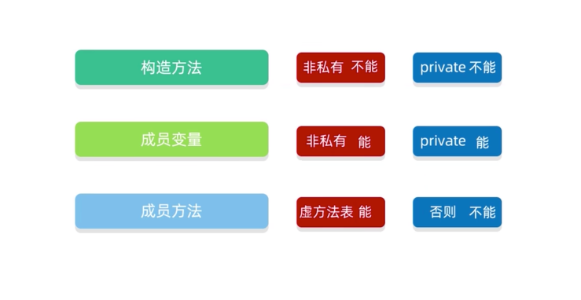
.class是叫字节码文件
虚方法表
非private
非static
非final
继承中成员变量访问的特点¶
就近原则
- 重名解决方法：
This用本类的
super用父类的
方法的重写¶
当父类的方法不能满足子类现在的需求时候，需要进行方法重写
@Override重写注解
需要在重写方法的头上加上@Override
建议写上
重写的方法尽量和父类保持一致
继承构造方法的访问特点¶
- 父类的构造方法不会被子类继承
意思就是子类要重新写构造方法！
但可以用super调用
- 怎么调用父类构造方法？
第一行写super（）
意思是默认调用父类的无参构造。
不写super（）也存在
有参构造要手动写super（参数1，参数2）
this、super总结¶
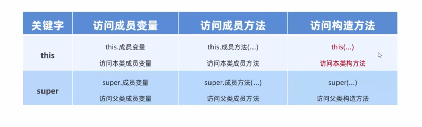
This：理解为一个变量，表示当前方法调用者的地址值
super:代表父类存储空间
cmd+p创建对象时提示参数¶
创建对象，如果忘记了参数可以cmd+p提示参数
多态¶
概念¶
- 多态：对象的多种形态
- 格式：
把子类对象赋值给父类
- 前提：
1.有继承或者实现关系
2.有方法重写
- 好处：
使用父类类型作为方法的参数，可以接收所有子类对象，体现多态的拓展性和便利
多态调用成员的特点¶
-
变量调用：编译看左边的父类Fu，运行也看左边Fu
-
方法调用：编译看左边Fu，运行看右边的子类zi
简单的说：就是f可以调用子类中重写的方法。
多态的优势¶
1.多态下，右边对象可以实现解耦合，便于扩展和维护
2.定义方法的时候，使用父类作为参数，可以接受所有子类对象，体现了多态的便利性（重要）
如object
多态的弊端¶
不能调用子类中的特有方法！
解决弊端的方案：
用强制转换变回子类类型
Person p = new student()
Student s = (Student) p;
如果转换类型和真实对象类型不一致回报错，
转换的时候用instanceof关键字进行判断，这个多态是不是自己想要的对象类型
A instanceof Student b
扩展的知识¶
包¶
- 定义：
就是文件夹。
用来管理各种不同功能的java类，方便后期代码维护。
- 包名的书写规则
公司域名反写+包的作用，全部英文小写，见名知意
- 使用其他类的规则
用import导包
1.使用同一个包中的类时，不需要导包
2.使用java.lang不需要导包
这个是java自带的官方包，里面有例如String类
3.如果同时使用俩个包中的同名类，需要使用全类名
全类名：包名+类名
final¶
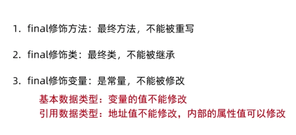
修饰方法、类了解一下就可以
- 适用场景
常用的final修饰的变量叫作常量，只能被赋值一次。
可以增强代码的可读性。
常量命名
单个单词：全部大写
多个单词：全部大写，单词与单词用下划线分开
例如：DELETE_STUDENT
权限修饰符¶
控制一个成员能被访问的范围
可以修饰成员变量、方法、构造方法
私有Private
默认 protected
公共public
就掌握俩个常用的就好了
代码块（了解¶
局部代码块
构造代码块
静态代码块
抽象类abstract¶
- 作用：
在抽取共性的时候，无法确定方法体，就把方法体定义为抽象的。
- 抽象方法：
共性的方法抽取到父类中，每个子类中执行的内容是不一样的，所以在父类中不能确定具体的方法，该方法可以定义为抽象方法。
- 格式
例如：public abstract void eat();
-
注意事项
-
抽象类不能创建对象
- 抽象类中不一定有抽象方法，有抽象方法的类一定是抽象类
- 抽象类一般都是父类
- 创建子类继承父类的时候，因为父类是抽象类，所以一定要重写抽象方法！！！！！
-
抽象类没有方法体
-
意义：
多人合作写代码的时候，统一方法名
强制子类必须按照这种格式进行重写代码
接口interface¶
- 接口的定义和使用
- 接口和类之间是实现关系
用implements关键字
例如：public class XXX implements 接口名
要完成实现，需要在类中重写所有抽象方法
接口要单独创建一个interface
接口里面用抽象方法，便于统一代码格式
接口中成员的特点¶
- 成员变量：只能是常量
默认修饰符public static final
-
构造方法：没有
-
成员方法：只能是抽象方法
默认修饰符public abstract
接口和类的关系¶
- 接口和类之间是实现关系
- 类和类之间是继承关系
- 接口和接口之间是继承关系
opt+回车快速重写抽象类方法¶
写带方法体的方法¶
1.默认方法
关键字default
这是一个不强制重写的方法
它的出现是为了解决规则多变的情况，防止已经写好的实现接口报错
在实现接口的时候：
默认方法可以重写，也可以不重写
2.静态方法
静态方法不能重写
调用的时候要用接口名.静态方法
3.私有方法
简化接口内方法的代码用
接口的应用¶
- 1.行为的规则，是行为抽象。
想要哪个类拥有这个行为，就实现这个接口就可以了
- 2.接口多态
当一个方法的参数是接口时候，可以传递接口所有实现类的对象。
内部类¶
-
含义：在A类的内部定义B类，B类就被称为内部类
-
为什么要学习内部类
-
内部类表示的事物是外部类的一部分
-
内部类单独出现是没有任何意义的
-
内部类访问的特点
-
内部类可以直接访问外部类的成员，包括私有
-
外部类要访问内部类的成员，必须创建对象
内部类的分类¶
- 成员内部类
写在成员位置的，属于外部类的成员
- 静态内部类
- 局部内部类
（以上了解就可以了）
- &匿名内部类（掌握）
匿名内部类¶
- 包含：实现/继承、方法重写、创建对象
- 格式：
- 使用场景：
当方法的参数是接口或者类时，
如果是接口，就可以传递这个接口的实现类对象，
如果实现类只要使用一次，就可以用匿名内部类简化代码
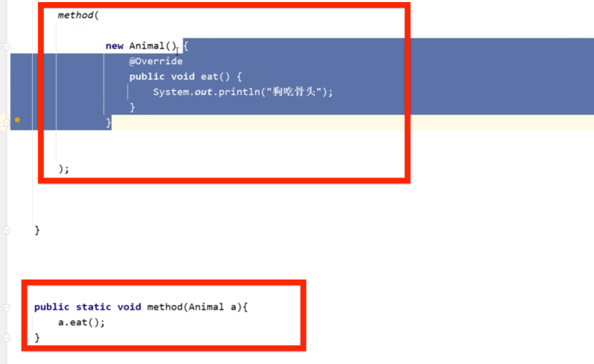
常用的API¶
API用很多方法
（不用记方法
记一下类名字和类的作用就可以了
养成查阅API帮助文档的习惯
Java.lang是java的核心包
Math¶
里面的方法都是静态的。用类名调用方法就可以了
System¶
与系统有关
几个常用的方法
exit终止Java虚拟机currentTimeMilleis返回当前系统的时间毫秒值（可以用来判断哪个代码运行效率更高）1秒=1000毫秒arraycopy拷贝数组
Runtime¶
查询底层内存有关的类
Object¶
和地址有关的
toString
默认返回的是当前对象地址
直接sout（a）也可以输出对象地址.
当重写了toString之后，sout（a）是直接打印的是这个对象的属性值
存在的意义：
为了被子类重写方法，输出有用的内容
如果我们想要输出对象的属性，可以重写toString方法就可以了
可以用cmd+n快速写toString
equlas
默认比较的两个对象的地址，返回的是布尔类型的
- 意义：为了被子类重写方法，比较有用的内容
cmd+N官方写的equals是用来比较每一个属性
- clone
要默认重写方法
浅克隆（完全拷贝
深克隆（引用数据类型会重新创建一个新数组）（如果要用需要重写方法或者用第三方
Objects¶
equlas
这个方法更加安全
因为传统的equals内传递的参数必须不能为null，容易出现异常
Objects.equlas的里面可以写null
所以对象进行内容比较多时候建议使用Objects.equlas
isNull
isNull方法判断是不是null
是null就返回true
bigInteger¶
大整数，基本没有上限
-
构造方法
-
Biginteger(int num, Random and)获得【0-2的num次-1】的随机数 biginteger(String val)获得指定的大整数（不能写小数….
比较常用
-
valueof(Long a)静态构造方法。如：biginteger b1 = biginteger.valueof(12345); -
成员方法
加减乘除幂余数max min equlas
转成整数intValue、longValue
Bigdecimal¶
-
较大的小数精确计算有关的类
-
建议使用的构造方法
静态方法构造对象
- 成员方法：
加减乘除
除法divide（舍入模式
regex正则表达式¶
作用：
- 检验字符串是否满足规则
- 在一段文本中找符合要求的内容
- 字符类规则：
[ ]
^
-
&&交集
- 预定义字符规则
. \s \d \w
在JAVA中俩个\表示一个\
例如\w
- 数量词规则（校验多个字符时
在API中搜pattern可以查询
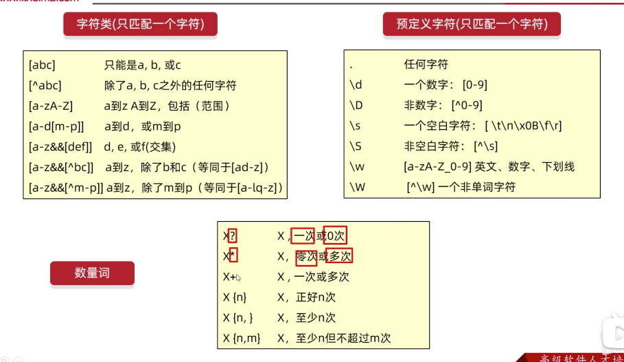
- 总结
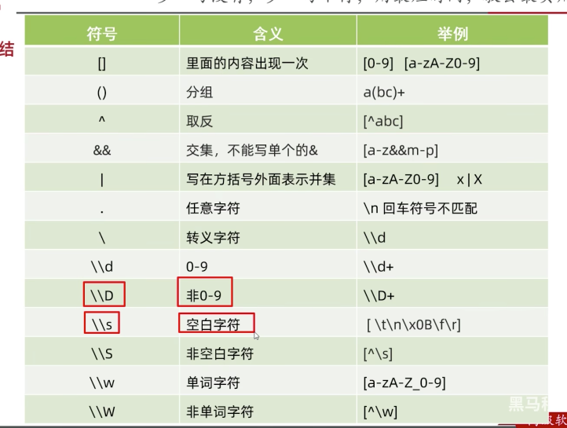
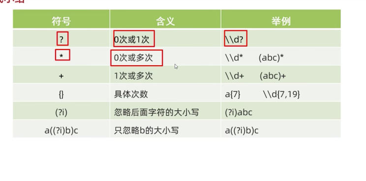
爬虫¶
regex的拓展使用：在一段文本中找要求的内容，比如在本地文本找爬取身份证号、手机号
Pattern 表示正则表达式
Matcher文本匹配器
- 获得正则表达式的对象
- 获得文本匹配器的对象
m是对象，p是规则，str字符串。这里调用了正则表达式的成员方法，它返回的是一个文本匹配器对象
- 爬取数据
m.find()从头开始读取数据，寻找满足规则的子串，找到了就返回的是true
内部还记录了子串的起始索引和结束索引
- 读取数据
m.group()利用find记录的索引来读取字符串，返回的是字符串String
- 完成无限循环需要用while（m.find())
总结：
（总体格式比较固定）
爬虫拓展¶
有条件的爬取数据
（其中？表示前面的java
表示爬取版本号为8，11，18的java文本，但是只要java，不显示版本号
就当作是java=8｜11｜18
不显示这些版本号就是=
如果要显示版本号就是：
不要这些版本号的话就是！
- 贪婪爬取，非贪婪爬取
贪婪：尽可能多的获取数据
Java默认就是贪婪爬取
- 贪婪：就是加个数量词+或者*
- 非贪婪：后面多加个？如
*？+？
例子：贪婪ab+，非贪婪ab+？
- 字符串中有关正则表达式的成员方法
replaceAll
Split切割
- 捕获分组、非捕获分组
时间类¶
-
Date类 -
创建日期的对象
Date（）表示当前时间
从1970年开始的
Date（long date）表示指定时间（里面参数date表示毫秒值
- 修改对象中的毫秒值
SimpleDateFormat
2个作用
1 自己想要的格式化日期
2 解析：把字符串-》日期
方法：
format（date） 格式化日期
例如：把xx/xx/xx格式化成
xx年xx月xx日
返回的是字符串类
Parse 解析字符串-〉日期
返回的是date类
-
Calendar -
获得对象要用静态方法
getInstance
- 常见方法
修改、获取、增加
- JDK8新增时间相关类
代码变得简单了
判断时间大小的方法
计算时间间隔的方法
1L是指1秒
包装类¶
含义：基本数据类型对应的引用类型
八种基本数据类型都有包装类
有自动装箱和拆箱，就是可以不用new integer，可以直接 integer i1 = 10；
可以把integer直接当作int 用，加减乘除都不用调用方法
Integer 有转换成2 8 16进制的方法
还有字符串转换成int 方法
java是强类型语言，就是不是同一种数据类型，是无法计算的。
以后想要键盘录入，不管是什么类型的统一使用
nextLine特点是遇到回车才停止，其他的遇到空格制表符就会停止。
如果想要int类型的话，就用Integer.parseInt(String xx)来进行类型转换